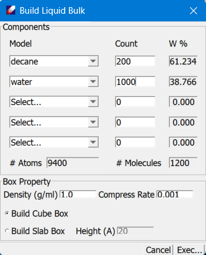

Build Liquid Bulk Dialog

Model has pulldown menus for selecting molecules. If molecular models are selected before open this dialog, the molecules will be filled. Mixtures can be built by selecting different molecules with different numbers (counts). Counts should be entered as number of the selected molecule. Pressing "enter" on keyboard will calculate the percentage of each molecule in the mixture, the total number of atoms and the number of molecules in the box.
Density allows the user to specify a target density.
Compress Rate sets the rate to compressed the box, 0.001 is recommended.
Build Cubic Box or Build Slab Box sets what type of box is built. For a cubic box, all three edge lengths (A=B=C) are calculated based on the given number of molecules and density. For a slab box, the box height must be specified.
Execute starts the background job.
When the job finished, the initial bulk liquid model will be loaded into the Project Navigator.